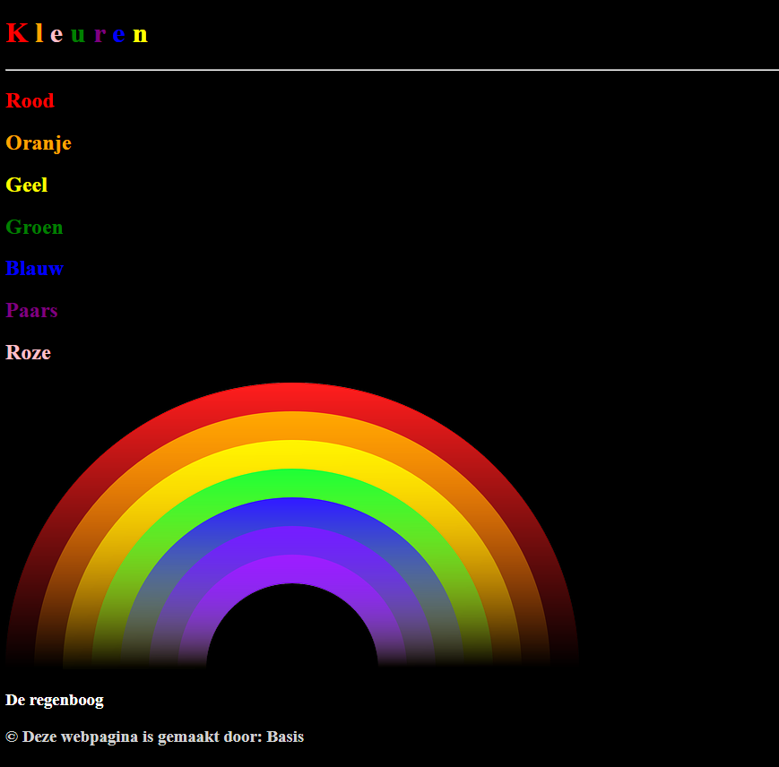
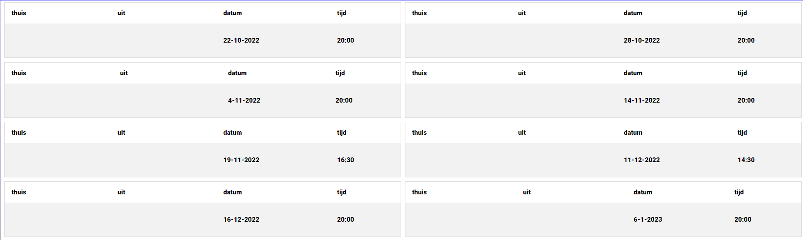
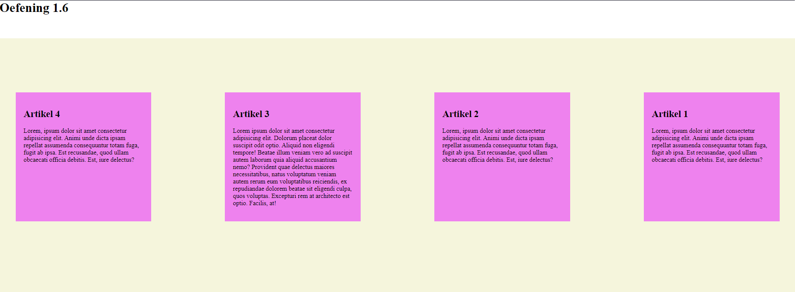
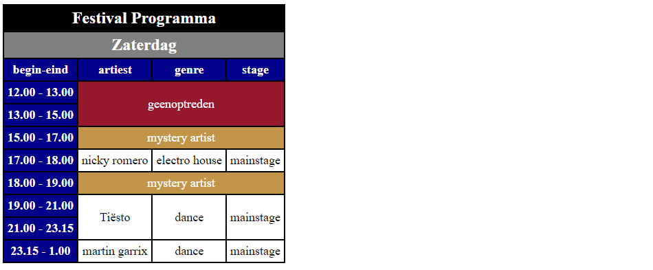

dit is opdracht 3.2 van thema 1 en ik vond dit een leuke opdracht om
te maken omdat we toen met span classes moesten werken en ik niet wist
of dat mogelijk was en over het algemeen vind ik dit goed gelukt.

deze foto komt uit het 1e project en ik vind hem goed gelukt omdat ik
moest uitvogelen hoe ik alle wedstrijden van den bosch kon laten zien
en uiteindlijk kwamik bij een tabel uit die hadden destijds nog niet
gebruikt en dus was dit voor mij de 1e keer dat ik dit met een tabel
opgelost had.

ik vind dit over het algemeen een luke opdracht om gemaakt te hebben
omdat we met een box-wrapper moesten werken en we de volgorde van hoe
het op de pagina komt te staan moesten veranderen dus dit was een
kleine maar leerzame opdracht voor mij.

dit was een luke opdracht om te maken vooral omdat we met row-span en
collem-span mochten werken. het eindresultaat is erg goed gelukt omdat
je kan zien dat je met classes en id moet werken om verschillende
kleuren in de tabel te krijgen.